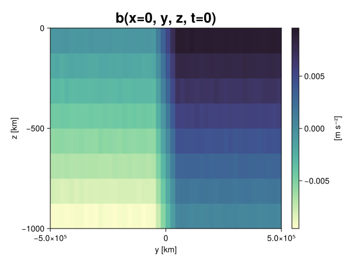
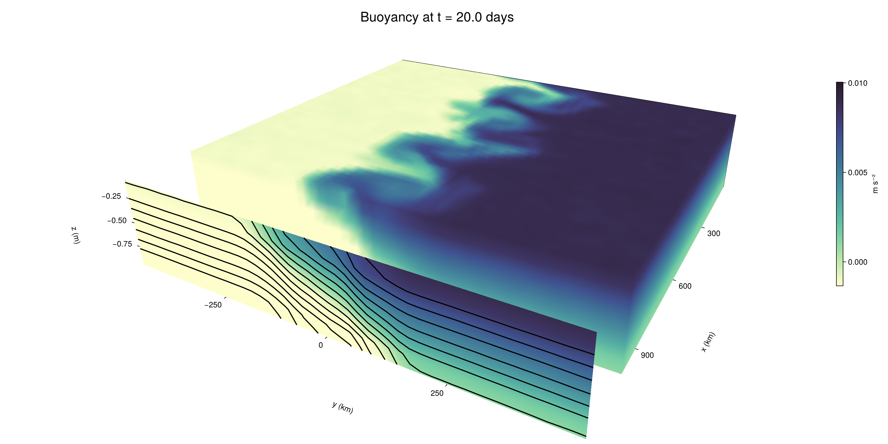

Baroclinic adjustment
In this example, we simulate the evolution and equilibration of a baroclinically unstable front.
Install dependencies
First let's make sure we have all required packages installed.
using Pkg
pkg"add Oceananigans, CairoMakie"using Oceananigans
using Oceananigans.UnitsGrid
We use a three-dimensional channel that is periodic in the x direction:
Lx = 1000kilometers # east-west extent [m]
Ly = 1000kilometers # north-south extent [m]
Lz = 1kilometers # depth [m]
grid = RectilinearGrid(size = (48, 48, 8),
x = (0, Lx),
y = (-Ly/2, Ly/2),
z = (-Lz, 0),
topology = (Periodic, Bounded, Bounded))48×48×8 RectilinearGrid{Float64, Periodic, Bounded, Bounded} on CPU with 3×3×3 halo
├── Periodic x ∈ [0.0, 1.0e6) regularly spaced with Δx=20833.3
├── Bounded y ∈ [-500000.0, 500000.0] regularly spaced with Δy=20833.3
└── Bounded z ∈ [-1000.0, 0.0] regularly spaced with Δz=125.0Model
We built a HydrostaticFreeSurfaceModel with an ImplicitFreeSurface solver. Regarding Coriolis, we use a beta-plane centered at 45° South.
model = HydrostaticFreeSurfaceModel(; grid,
coriolis = BetaPlane(latitude = -45),
buoyancy = BuoyancyTracer(),
tracers = :b,
momentum_advection = WENO(),
tracer_advection = WENO())HydrostaticFreeSurfaceModel{CPU, RectilinearGrid}(time = 0 seconds, iteration = 0)
├── grid: 48×48×8 RectilinearGrid{Float64, Periodic, Bounded, Bounded} on CPU with 3×3×3 halo
├── timestepper: QuasiAdamsBashforth2TimeStepper
├── tracers: b
├── closure: Nothing
├── buoyancy: BuoyancyTracer with ĝ = NegativeZDirection()
├── free surface: ImplicitFreeSurface with gravitational acceleration 9.80665 m s⁻²
│ └── solver: FFTImplicitFreeSurfaceSolver
├── advection scheme:
│ ├── momentum: WENO reconstruction order 5
│ └── b: WENO reconstruction order 5
└── coriolis: BetaPlane{Float64}We start our simulation from rest with a baroclinically unstable buoyancy distribution. We use ramp(y, Δy), defined below, to specify a front with width Δy and horizontal buoyancy gradient M². We impose the front on top of a vertical buoyancy gradient N² and a bit of noise.
"""
ramp(y, Δy)
Linear ramp from 0 to 1 between -Δy/2 and +Δy/2.
For example:
```
y < -Δy/2 => ramp = 0
-Δy/2 < y < -Δy/2 => ramp = y / Δy
y > Δy/2 => ramp = 1
```
"""
ramp(y, Δy) = min(max(0, y/Δy + 1/2), 1)
N² = 1e-5 # [s⁻²] buoyancy frequency / stratification
M² = 1e-7 # [s⁻²] horizontal buoyancy gradient
Δy = 100kilometers # width of the region of the front
Δb = Δy * M² # buoyancy jump associated with the front
ϵb = 1e-2 * Δb # noise amplitude
bᵢ(x, y, z) = N² * z + Δb * ramp(y, Δy) + ϵb * randn()
set!(model, b=bᵢ)Let's visualize the initial buoyancy distribution.
using CairoMakie
# Build coordinates with units of kilometers
x, y, z = 1e-3 .* nodes(grid, (Center(), Center(), Center()))
b = model.tracers.b
fig, ax, hm = heatmap(view(b, 1, :, :),
colormap = :deep,
axis = (xlabel = "y [km]",
ylabel = "z [km]",
title = "b(x=0, y, z, t=0)",
titlesize = 24))
Colorbar(fig[1, 2], hm, label = "[m s⁻²]")
fig
Simulation
Now let's build a Simulation.
simulation = Simulation(model, Δt=20minutes, stop_time=20days)Simulation of HydrostaticFreeSurfaceModel{CPU, RectilinearGrid}(time = 0 seconds, iteration = 0)
├── Next time step: 20 minutes
├── Elapsed wall time: 0 seconds
├── Wall time per iteration: NaN days
├── Stop time: 20 days
├── Stop iteration : Inf
├── Wall time limit: Inf
├── Callbacks: OrderedDict with 4 entries:
│ ├── stop_time_exceeded => Callback of stop_time_exceeded on IterationInterval(1)
│ ├── stop_iteration_exceeded => Callback of stop_iteration_exceeded on IterationInterval(1)
│ ├── wall_time_limit_exceeded => Callback of wall_time_limit_exceeded on IterationInterval(1)
│ └── nan_checker => Callback of NaNChecker for u on IterationInterval(100)
├── Output writers: OrderedDict with no entries
└── Diagnostics: OrderedDict with no entriesWe add a TimeStepWizard callback to adapt the simulation's time-step,
conjure_time_step_wizard!(simulation, IterationInterval(20), cfl=0.2, max_Δt=20minutes)Also, we add a callback to print a message about how the simulation is going,
using Printf
wall_clock = Ref(time_ns())
function print_progress(sim)
u, v, w = model.velocities
progress = 100 * (time(sim) / sim.stop_time)
elapsed = (time_ns() - wall_clock[]) / 1e9
@printf("[%05.2f%%] i: %d, t: %s, wall time: %s, max(u): (%6.3e, %6.3e, %6.3e) m/s, next Δt: %s\n",
progress, iteration(sim), prettytime(sim), prettytime(elapsed),
maximum(abs, u), maximum(abs, v), maximum(abs, w), prettytime(sim.Δt))
wall_clock[] = time_ns()
return nothing
end
add_callback!(simulation, print_progress, IterationInterval(100))Diagnostics/Output
Here, we save the buoyancy, $b$, at the edges of our domain as well as the zonal ($x$) average of buoyancy.
u, v, w = model.velocities
ζ = ∂x(v) - ∂y(u)
B = Average(b, dims=1)
U = Average(u, dims=1)
V = Average(v, dims=1)
filename = "baroclinic_adjustment"
save_fields_interval = 0.5day
slicers = (east = (grid.Nx, :, :),
north = (:, grid.Ny, :),
bottom = (:, :, 1),
top = (:, :, grid.Nz))
for side in keys(slicers)
indices = slicers[side]
simulation.output_writers[side] = JLD2OutputWriter(model, (; b, ζ);
filename = filename * "_$(side)_slice",
schedule = TimeInterval(save_fields_interval),
overwrite_existing = true,
indices)
end
simulation.output_writers[:zonal] = JLD2OutputWriter(model, (; b=B, u=U, v=V);
filename = filename * "_zonal_average",
schedule = TimeInterval(save_fields_interval),
overwrite_existing = true)JLD2OutputWriter scheduled on TimeInterval(12 hours):
├── filepath: ./baroclinic_adjustment_zonal_average.jld2
├── 3 outputs: (b, u, v)
├── array type: Array{Float64}
├── including: [:grid, :coriolis, :buoyancy, :closure]
├── file_splitting: NoFileSplitting
└── file size: 30.7 KiBNow we're ready to run.
@info "Running the simulation..."
run!(simulation)
@info "Simulation completed in " * prettytime(simulation.run_wall_time)[ Info: Running the simulation...
[ Info: Initializing simulation...
[00.00%] i: 0, t: 0 seconds, wall time: 22.077 seconds, max(u): (0.000e+00, 0.000e+00, 0.000e+00) m/s, next Δt: 20 minutes
[ Info: ... simulation initialization complete (23.642 seconds)
[ Info: Executing initial time step...
[ Info: ... initial time step complete (18.396 seconds).
[06.94%] i: 100, t: 1.389 days, wall time: 33.967 seconds, max(u): (1.280e-01, 1.136e-01, 1.657e-03) m/s, next Δt: 20 minutes
[13.89%] i: 200, t: 2.778 days, wall time: 1.026 seconds, max(u): (2.171e-01, 1.754e-01, 1.674e-03) m/s, next Δt: 20 minutes
[20.83%] i: 300, t: 4.167 days, wall time: 1.056 seconds, max(u): (2.984e-01, 2.673e-01, 1.726e-03) m/s, next Δt: 20 minutes
[27.78%] i: 400, t: 5.556 days, wall time: 1.061 seconds, max(u): (3.945e-01, 4.110e-01, 2.081e-03) m/s, next Δt: 20 minutes
[34.72%] i: 500, t: 6.944 days, wall time: 984.872 ms, max(u): (4.916e-01, 5.529e-01, 2.481e-03) m/s, next Δt: 20 minutes
[41.67%] i: 600, t: 8.333 days, wall time: 988.984 ms, max(u): (6.150e-01, 7.730e-01, 2.712e-03) m/s, next Δt: 20 minutes
[48.61%] i: 700, t: 9.722 days, wall time: 1.096 seconds, max(u): (9.211e-01, 1.046e+00, 3.847e-03) m/s, next Δt: 20 minutes
[55.56%] i: 800, t: 11.111 days, wall time: 1.009 seconds, max(u): (1.313e+00, 1.186e+00, 4.501e-03) m/s, next Δt: 20 minutes
[62.50%] i: 900, t: 12.500 days, wall time: 890.399 ms, max(u): (1.351e+00, 1.085e+00, 4.132e-03) m/s, next Δt: 20 minutes
[69.44%] i: 1000, t: 13.889 days, wall time: 1.038 seconds, max(u): (1.299e+00, 9.991e-01, 4.373e-03) m/s, next Δt: 20 minutes
[76.39%] i: 1100, t: 15.278 days, wall time: 981.375 ms, max(u): (1.538e+00, 9.450e-01, 3.371e-03) m/s, next Δt: 20 minutes
[83.33%] i: 1200, t: 16.667 days, wall time: 988.196 ms, max(u): (1.354e+00, 1.047e+00, 3.751e-03) m/s, next Δt: 20 minutes
[90.28%] i: 1300, t: 18.056 days, wall time: 882.888 ms, max(u): (1.381e+00, 9.728e-01, 2.937e-03) m/s, next Δt: 20 minutes
[97.22%] i: 1400, t: 19.444 days, wall time: 998.971 ms, max(u): (1.377e+00, 1.192e+00, 2.616e-03) m/s, next Δt: 20 minutes
[ Info: Simulation is stopping after running for 1.002 minutes.
[ Info: Simulation time 20 days equals or exceeds stop time 20 days.
[ Info: Simulation completed in 1.003 minutes
Visualization
All that's left is to make a pretty movie. Actually, we make two visualizations here. First, we illustrate how to make a 3D visualization with Makie's Axis3 and Makie.surface. Then we make a movie in 2D. We use CairoMakie in this example, but note that using GLMakie is more convenient on a system with OpenGL, as figures will be displayed on the screen.
using CairoMakieThree-dimensional visualization
We load the saved buoyancy output on the top, north, and east surface as FieldTimeSerieses.
filename = "baroclinic_adjustment"
sides = keys(slicers)
slice_filenames = NamedTuple(side => filename * "_$(side)_slice.jld2" for side in sides)
b_timeserieses = (east = FieldTimeSeries(slice_filenames.east, "b"),
north = FieldTimeSeries(slice_filenames.north, "b"),
top = FieldTimeSeries(slice_filenames.top, "b"))
B_timeseries = FieldTimeSeries(filename * "_zonal_average.jld2", "b")
times = B_timeseries.times
grid = B_timeseries.grid48×48×8 RectilinearGrid{Float64, Periodic, Bounded, Bounded} on CPU with 3×3×3 halo
├── Periodic x ∈ [0.0, 1.0e6) regularly spaced with Δx=20833.3
├── Bounded y ∈ [-500000.0, 500000.0] regularly spaced with Δy=20833.3
└── Bounded z ∈ [-1000.0, 0.0] regularly spaced with Δz=125.0We build the coordinates. We rescale horizontal coordinates to kilometers.
xb, yb, zb = nodes(b_timeserieses.east)
xb = xb ./ 1e3 # convert m -> km
yb = yb ./ 1e3 # convert m -> km
Nx, Ny, Nz = size(grid)
x_xz = repeat(x, 1, Nz)
y_xz_north = y[end] * ones(Nx, Nz)
z_xz = repeat(reshape(z, 1, Nz), Nx, 1)
x_yz_east = x[end] * ones(Ny, Nz)
y_yz = repeat(y, 1, Nz)
z_yz = repeat(reshape(z, 1, Nz), grid.Ny, 1)
x_xy = x
y_xy = y
z_xy_top = z[end] * ones(grid.Nx, grid.Ny)Then we create a 3D axis. We use zonal_slice_displacement to control where the plot of the instantaneous zonal average flow is located.
fig = Figure(size = (1600, 800))
zonal_slice_displacement = 1.2
ax = Axis3(fig[2, 1],
aspect=(1, 1, 1/5),
xlabel = "x (km)",
ylabel = "y (km)",
zlabel = "z (m)",
xlabeloffset = 100,
ylabeloffset = 100,
zlabeloffset = 100,
limits = ((x[1], zonal_slice_displacement * x[end]), (y[1], y[end]), (z[1], z[end])),
elevation = 0.45,
azimuth = 6.8,
xspinesvisible = false,
zgridvisible = false,
protrusions = 40,
perspectiveness = 0.7)Axis3()We use data from the final savepoint for the 3D plot. Note that this plot can easily be animated by using Makie's Observable. To dive into Observables, check out Makie.jl's Documentation.
n = length(times)41Now let's make a 3D plot of the buoyancy and in front of it we'll use the zonally-averaged output to plot the instantaneous zonal-average of the buoyancy.
b_slices = (east = interior(b_timeserieses.east[n], 1, :, :),
north = interior(b_timeserieses.north[n], :, 1, :),
top = interior(b_timeserieses.top[n], :, :, 1))
# Zonally-averaged buoyancy
B = interior(B_timeseries[n], 1, :, :)
clims = 1.1 .* extrema(b_timeserieses.top[n][:])
kwargs = (colorrange=clims, colormap=:deep, shading=NoShading)
surface!(ax, x_yz_east, y_yz, z_yz; color = b_slices.east, kwargs...)
surface!(ax, x_xz, y_xz_north, z_xz; color = b_slices.north, kwargs...)
surface!(ax, x_xy, y_xy, z_xy_top; color = b_slices.top, kwargs...)
sf = surface!(ax, zonal_slice_displacement .* x_yz_east, y_yz, z_yz; color = B, kwargs...)
contour!(ax, y, z, B; transformation = (:yz, zonal_slice_displacement * x[end]),
levels = 15, linewidth = 2, color = :black)
Colorbar(fig[2, 2], sf, label = "m s⁻²", height = Relative(0.4), tellheight=false)
title = "Buoyancy at t = " * string(round(times[n] / day, digits=1)) * " days"
fig[1, 1:2] = Label(fig, title; fontsize = 24, tellwidth = false, padding = (0, 0, -120, 0))
rowgap!(fig.layout, 1, Relative(-0.2))
colgap!(fig.layout, 1, Relative(-0.1))
save("baroclinic_adjustment_3d.png", fig)
Two-dimensional movie
We make a 2D movie that shows buoyancy $b$ and vertical vorticity $ζ$ at the surface, as well as the zonally-averaged zonal and meridional velocities $U$ and $V$ in the $(y, z)$ plane. First we load the FieldTimeSeries and extract the additional coordinates we'll need for plotting
ζ_timeseries = FieldTimeSeries(slice_filenames.top, "ζ")
U_timeseries = FieldTimeSeries(filename * "_zonal_average.jld2", "u")
B_timeseries = FieldTimeSeries(filename * "_zonal_average.jld2", "b")
V_timeseries = FieldTimeSeries(filename * "_zonal_average.jld2", "v")
xζ, yζ, zζ = nodes(ζ_timeseries)
yv = ynodes(V_timeseries)
xζ = xζ ./ 1e3 # convert m -> km
yζ = yζ ./ 1e3 # convert m -> km
yv = yv ./ 1e3 # convert m -> km49-element Vector{Float64}:
-500.0
-479.1666666666667
-458.3333333333333
-437.5
-416.6666666666667
-395.8333333333333
-375.0
-354.1666666666667
-333.3333333333333
-312.5
-291.6666666666667
-270.8333333333333
-250.0
-229.16666666666666
-208.33333333333334
-187.5
-166.66666666666666
-145.83333333333334
-125.0
-104.16666666666667
-83.33333333333333
-62.5
-41.666666666666664
-20.833333333333332
0.0
20.833333333333332
41.666666666666664
62.5
83.33333333333333
104.16666666666667
125.0
145.83333333333334
166.66666666666666
187.5
208.33333333333334
229.16666666666666
250.0
270.8333333333333
291.6666666666667
312.5
333.3333333333333
354.1666666666667
375.0
395.8333333333333
416.6666666666667
437.5
458.3333333333333
479.1666666666667
500.0Next, we set up a plot with 4 panels. The top panels are large and square, while the bottom panels get a reduced aspect ratio through rowsize!.
set_theme!(Theme(fontsize=24))
fig = Figure(size=(1800, 1000))
axb = Axis(fig[1, 2], xlabel="x (km)", ylabel="y (km)", aspect=1)
axζ = Axis(fig[1, 3], xlabel="x (km)", ylabel="y (km)", aspect=1, yaxisposition=:right)
axu = Axis(fig[2, 2], xlabel="y (km)", ylabel="z (m)")
axv = Axis(fig[2, 3], xlabel="y (km)", ylabel="z (m)", yaxisposition=:right)
rowsize!(fig.layout, 2, Relative(0.3))To prepare a plot for animation, we index the timeseries with an Observable,
n = Observable(1)
b_top = @lift interior(b_timeserieses.top[$n], :, :, 1)
ζ_top = @lift interior(ζ_timeseries[$n], :, :, 1)
U = @lift interior(U_timeseries[$n], 1, :, :)
V = @lift interior(V_timeseries[$n], 1, :, :)
B = @lift interior(B_timeseries[$n], 1, :, :)Observable([-0.009375745815438158 -0.008110486560734714 -0.006845445851007245 -0.00560989774611479 -0.004410962191820233 -0.003132546265302069 -0.0018767858151831635 -0.0006083072196331408; -0.009359871654194794 -0.008125048453760244 -0.006850075254976443 -0.00562121552228241 -0.00436689614991329 -0.0031452345032862146 -0.0018846723485935728 -0.0006232382713378319; -0.00936532432107848 -0.008100672727044895 -0.00686243874276531 -0.0056295829791514485 -0.004383225509308261 -0.0031194858537667487 -0.0018863111228592556 -0.0006054562278148614; -0.009375260848678069 -0.008123498897139644 -0.006895939018947077 -0.00558490517866998 -0.004369359449900168 -0.00312113609311932 -0.001868720387329567 -0.0006388848250287207; -0.009393316405862108 -0.008120451707531975 -0.006860282836922985 -0.0056269709968609985 -0.00436466901647833 -0.0031171573647172045 -0.0018791417095764065 -0.0006455429556166975; -0.009366554833854056 -0.00813891979506512 -0.006871317951225648 -0.0055973117415044115 -0.004382222133761785 -0.0031127911724267263 -0.0018625511591681663 -0.0006036336795420949; -0.009390220873853836 -0.00812607837846545 -0.006860433241376036 -0.00566006633752289 -0.004385556848062567 -0.0031048874826156894 -0.00185897067625734 -0.0006442898805187887; -0.009387900187016027 -0.008133107299198463 -0.006883311859200501 -0.005637474124243778 -0.004390886257976904 -0.003133620423123981 -0.0019154416194635156 -0.000613893368327405; -0.009376322352776335 -0.00814280680890894 -0.006854285718656469 -0.005618666500569487 -0.004372345498078622 -0.003104133659223718 -0.001873593692636493 -0.0006157300938435269; -0.00935852846825302 -0.008168529623123899 -0.006872680113442449 -0.005624639899327989 -0.004369544608534975 -0.003108748006382571 -0.001890302597012137 -0.000630373523538932; -0.009365058824539188 -0.008121346971957573 -0.00687246821445209 -0.005609517199468568 -0.0043636592491659585 -0.0031323247121971087 -0.001875318111298839 -0.0006296362622120675; -0.009362673552677987 -0.008140353859245287 -0.006864027427592435 -0.0056296447300420984 -0.004358614620989847 -0.003123684918193237 -0.0018778650429297622 -0.0006226654412235946; -0.009367173105050646 -0.008159151218571322 -0.0069020867723195755 -0.005637928217141922 -0.004345157702390767 -0.003123768958191022 -0.0018632067562196254 -0.0006510235870483116; -0.009364743054632358 -0.008131095103135066 -0.006869519705957619 -0.00564831171468629 -0.004381273176422837 -0.0031352537900093905 -0.001880380370558679 -0.0006266431521084576; -0.009364158254053017 -0.008134771445735406 -0.006879356316501144 -0.005634371118263791 -0.004368857736317114 -0.003139006923989741 -0.0018732374879732294 -0.000621620532894376; -0.009364483042269918 -0.008139536137702111 -0.00688306097099783 -0.005626942654587643 -0.004384324318538657 -0.00308899694583793 -0.0018964308363897953 -0.0006313905002864165; -0.009384792530385126 -0.008125235100559477 -0.006886526121369513 -0.005624674706819602 -0.004378422303486636 -0.0031663794975801355 -0.001857756539946581 -0.000626297759500547; -0.009384635661844323 -0.008143212406178926 -0.006885479396155476 -0.005624456319293862 -0.004327439116694219 -0.0031568361885686395 -0.0018623254933492668 -0.0006149940881728331; -0.009387569778085436 -0.008132887869802374 -0.006858929940406727 -0.0056555449849575124 -0.004372185199894162 -0.0031277394037456563 -0.0018876161573612774 -0.0006238365356934786; -0.009364485859489171 -0.008097912772217502 -0.006870395906679813 -0.005629197694839387 -0.004349661229334422 -0.00311987979267539 -0.0018900422238316335 -0.000623150515360981; -0.009367703909600435 -0.008160834543118424 -0.006883208055994887 -0.0056344818391748765 -0.004388976269260395 -0.003109932896106783 -0.0018904206989471385 -0.0006149766549031352; -0.009354038598828374 -0.00813687127725716 -0.00688174506812118 -0.005634801572834765 -0.00439767681921471 -0.0031185436010942326 -0.001882332573391855 -0.0006165576382823706; -0.007500220184397422 -0.00625256401084016 -0.004998803098954661 -0.003746901040177215 -0.0024744775668372057 -0.0012295518654582788 -5.78334700866714e-6 0.0012277840766442593; -0.005414062214526692 -0.004187804848750353 -0.002929172347898031 -0.0016804106753660634 -0.0004215452393054868 0.0008347638786392143 0.0020863729482395142 0.003337252996079844; -0.0033454053327159443 -0.0020958035983693678 -0.00084311456713269 0.00041210911856422633 0.0016561994132033636 0.002923057491683756 0.004172945823198816 0.005401282350000256; -0.0012485907111592478 -2.2818828286904014e-5 0.0012200900563916698 0.0024605386652325144 0.0037441724915635573 0.005014752461326151 0.006233233076793303 0.007522253625498007; 0.0006235602070499439 0.001872798537831855 0.003117208858651903 0.00437838066629703 0.005634022905016395 0.006844204082161763 0.008124929656260238 0.009355186511348389; 0.0006146720564517719 0.001868654860664119 0.0031326106277873252 0.0043776192881010015 0.005629107929052531 0.006882478388954565 0.008163976276552035 0.009381233819628342; 0.0006243921514366909 0.0018799337367011112 0.0031284412817577396 0.0043734110437152725 0.005613028350625419 0.006881712942467211 0.00814158166368797 0.009348354467068885; 0.0006188913389557675 0.0018857708495039185 0.003102331226372259 0.004379636759166458 0.005638026488978545 0.006875026206063916 0.008122610546883383 0.009368283593191036; 0.0006235866689465324 0.0018888327837193787 0.0031176402919384292 0.004401794328302835 0.005654373382644298 0.006858552909529569 0.008133619098386302 0.009369519504332931; 0.0006046629225759673 0.0018607816022560442 0.003130824737315323 0.004367000973646088 0.005617276938728944 0.006859491436655471 0.008123865541359304 0.0093724177003291; 0.0006358069707892536 0.0018852710745065452 0.0031207438016164473 0.004362229985755234 0.005618528532762178 0.006888076485708769 0.008132659683145528 0.009403004388368661; 0.0006418895849783833 0.001868595172102942 0.0031104866659571588 0.0043707825575151965 0.005636398639406887 0.006871572527067473 0.008119854666645734 0.009378838325611085; 0.000608905954691789 0.0018914904393547627 0.0031424366141812447 0.004350317821129356 0.005649108134262883 0.006874508686461958 0.008122244748893845 0.009368477037017514; 0.0006175399862168376 0.0018800028291802284 0.0031381054575252026 0.004389412362569334 0.005647986222172409 0.006889922926559144 0.008107569681557038 0.009353466243996245; 0.0006256401677608555 0.0018774916628892622 0.0030950829774655663 0.004358238223589297 0.005623280464637711 0.006859181842111335 0.00810727013165812 0.00940548813354671; 0.0006364049371862405 0.001869256436146497 0.003141286595332374 0.004398250470172555 0.005628279693366835 0.006861540665524184 0.008121721843466823 0.009369392459436805; 0.0006350309108886822 0.0018367642527267007 0.0031007026867615113 0.004332448749027486 0.0056422034305784125 0.006864557209798553 0.008150066303071427 0.009382298819106382; 0.0006539949146287797 0.0018573177168026006 0.0031633414053676575 0.004390357775789246 0.005619358110052714 0.006889716403189666 0.008109658193003454 0.009385600028223693; 0.0006099445945508403 0.001871986423431964 0.003120303497644125 0.004374588177453027 0.00562825283387982 0.006872618826137648 0.008112443853444328 0.00937065449349796; 0.0006265045983450063 0.0018675741206028624 0.0031220092398390243 0.004365955965877793 0.005618761271375487 0.006910714460768091 0.008143414484605706 0.00937749142132487; 0.000634261242736018 0.0018876514446321366 0.0031279757160750632 0.004374955238385325 0.005619864920970601 0.006877217730869699 0.00812191988445726 0.00938656021179173; 0.0006265475917805408 0.001872801317617757 0.0031426489661315546 0.004347714761423958 0.005592564788209131 0.006889785056728512 0.00812638424110245 0.009355331495590475; 0.0006483038292281706 0.0018588816804510518 0.0031445028328437063 0.00437269914075085 0.005615411973811889 0.006861413375187389 0.008131037218321683 0.009419367237839375; 0.0006151847567894695 0.0018711686317392096 0.0031137386696287843 0.00436706601390052 0.005605459795326934 0.006885365512789127 0.008125340434749535 0.00937704782450194; 0.0005941102243190278 0.0018724244469391195 0.003142064710938235 0.004389082547296163 0.005620694198667201 0.0068723711568145955 0.008119100659313998 0.009366543844072097; 0.0006053165753543525 0.0018955726400570402 0.003086933339505211 0.004360562591727884 0.005643732432242495 0.0068530991610138035 0.008123407734180957 0.009343153017449826])
and then build our plot:
hm = heatmap!(axb, xb, yb, b_top, colorrange=(0, Δb), colormap=:thermal)
Colorbar(fig[1, 1], hm, flipaxis=false, label="Surface b(x, y) (m s⁻²)")
hm = heatmap!(axζ, xζ, yζ, ζ_top, colorrange=(-5e-5, 5e-5), colormap=:balance)
Colorbar(fig[1, 4], hm, label="Surface ζ(x, y) (s⁻¹)")
hm = heatmap!(axu, yb, zb, U; colorrange=(-5e-1, 5e-1), colormap=:balance)
Colorbar(fig[2, 1], hm, flipaxis=false, label="Zonally-averaged U(y, z) (m s⁻¹)")
contour!(axu, yb, zb, B; levels=15, color=:black)
hm = heatmap!(axv, yv, zb, V; colorrange=(-1e-1, 1e-1), colormap=:balance)
Colorbar(fig[2, 4], hm, label="Zonally-averaged V(y, z) (m s⁻¹)")
contour!(axv, yb, zb, B; levels=15, color=:black)Finally, we're ready to record the movie.
frames = 1:length(times)
record(fig, filename * ".mp4", frames, framerate=8) do i
n[] = i
endThis page was generated using Literate.jl.